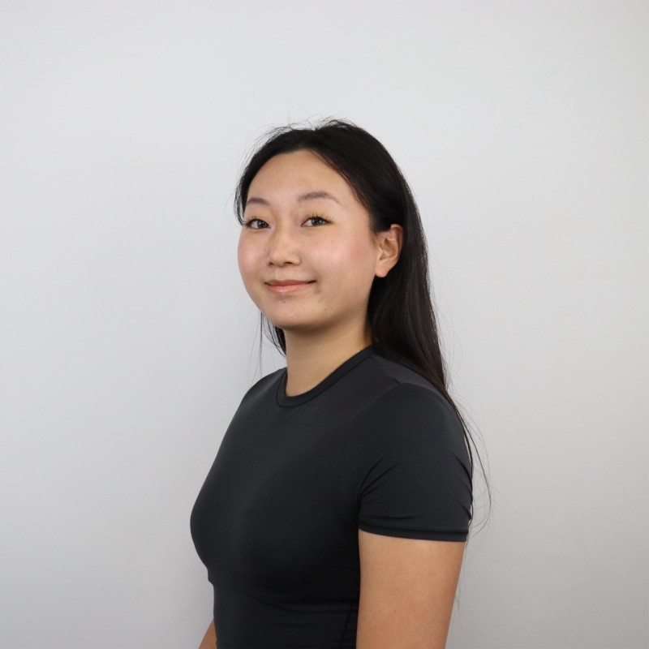

Portfolio · 2026
Master of Biotechnology Candidate
Computational Biology & Drug Discovery

Master of Biotechnology candidate with hands-on experience in wet-lab research, biomedical data analysis, and computational biology.
Recently co-developed an end-to-end PDAC target discovery pipeline integrating single-cell RNA-seq differential expression, LLM-assisted regulatory graph construction, Boolean knockout simulation, and DepMap benchmarking to prioritize candidate therapeutic interventions.
Proficient in Python and R for biological data processing and analysis, with additional background in GMP-compliant vaccine R&D and structured technical communication across scientific and non-scientific audiences. Drawn to roles at the intersection of cancer biology and AI-driven drug discovery, particularly in fast-moving research or startup environments.
Master of Biotechnology
Grades: 74/100
Bachelor of Science · Pharmaceutical Science
Grades: 85/100
Evaluated biotechnology strategies integrating mechanistic rationale, scientific evidence, and development considerations into structured briefing summaries.
End-to-end vaccine R&D spanning molecular characterisation, QC method development, formulation optimisation, and preclinical immunogenicity evaluation.
End-to-end pipeline combining Claude API literature mining, The Virtual Brain (TVB) digital-twin simulation, and minimax optimisation to identify robust neurostimulation settings that protect the worst-responding patient.
View Project ↗